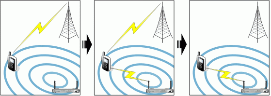

This topic describes the concept of Bearer Mobility in the Communications Framework.
Bearer Mobility is a feature that allows a device to change bearers without interruption to the user's data sessions. An example of a bearer change is if a device moves into the range of a Wi-Fi hot spot and the device moves the GPRS connections over to Wi-Fi. Example data sessions include: streaming videos; surfing the internet; and downloading emails. Example bearers include: Wireless LAN (eg Wi-Fi); 3G (including HSUPA and HSDPA); Circuit Switched Data (CSD); and GPRS.
A device is connected to a mobile network using GPRS. The device comes into range of a Wi-Fi network. The device decides to change to the Wi-Fi network and creates a bearer to access the Wi-Fi network. The device then moves all the existing connections across to the Wi-Fi bearer. In the final step the device disconnects from the GPRS network.
Bearer Mobility operates in response to changes in the environment of the device. A bearer is known as available when the device is in range of the bearer and the device can potentially use the bearer.
NOTE: The bearer can be available but unusable because of the security requirements of the bearer.
Symbian platform uses non-seamless Bearer Mobility. Non-seamless indicates that clients of the Socket Server must reconnect all sockets after the bearer has changed. The local IP address of the link changes if the bearer changes.
Two Socket Server Bearer Mobility APIs are available: RCommsMobilityApiExt and CActiveCommsMobilityApiExt. A client of the Socket Server cannot change bearer if the client does not use at least one Bearer Mobility API. A device can have clients that support Bearer Mobility and clients that do not support Bearer Mobility. If clients that support Bearer Mobility change bearer, the device does not disconnect a client that does not support Bearer Mobility unless that client's bearer is no longer available.
A client of the socket server can ask the user to accept or deny the change of bearer. For example, the client can display a dialog box to ask the user to accept or deny the change. The decision to ask the user remains with the client.
A client of the socket server can ask to use the default bearer. The default bearer is the highest priority bearer that is available. The device manufacturer or network operator creates the list of bearer priorities.
The Bearer Mobility components in the Communications Architecture implement a blacklist feature. The Socket Server implements the blacklist feature on the server side. The blacklist feature affects the notifications that a Socket Server client receives. The blacklist feature stops notifications for bearer changes that have previously been rejected. The device keeps a blacklist for each client.
For example:
A client receives a notification for a bearer change
The client sends a response to reject the bearer change
The device adds the rejected bearer to the blacklist for that client
The device does not notify the client of any further opportunities to change to that bearer
There can be variations in the operation of the blacklist. For example, there can be a limit on the lifetime of the blacklist.
NOTE: The blacklist scheme is dependent on the plug-ins and settings used for the Communications Architecture for the particular device.
Copyright ©2010 Nokia Corporation and/or its subsidiary(-ies).
All rights
reserved. Unless otherwise stated, these materials are provided under the terms of the Eclipse Public License
v1.0.